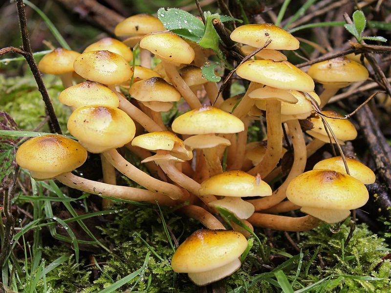

Hallimasche
Armillaria
Entrindet man den Stammfuß eines vom Hallimasch befallenen Baumes, wird das im Verborgenen lebende Pilzgeflecht (Myzel) sichtbar. Die Stränge verstopfen die Saftbahnen, der Baum stirbt. Äußerlich erscheinen nur die Fruchtkörper. Sie sind im jugendlichen Stadium essbar.